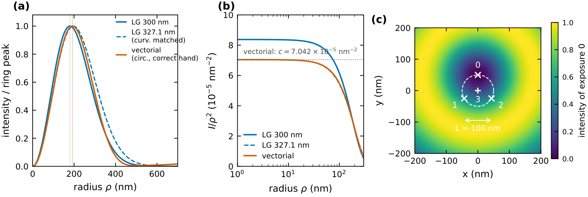
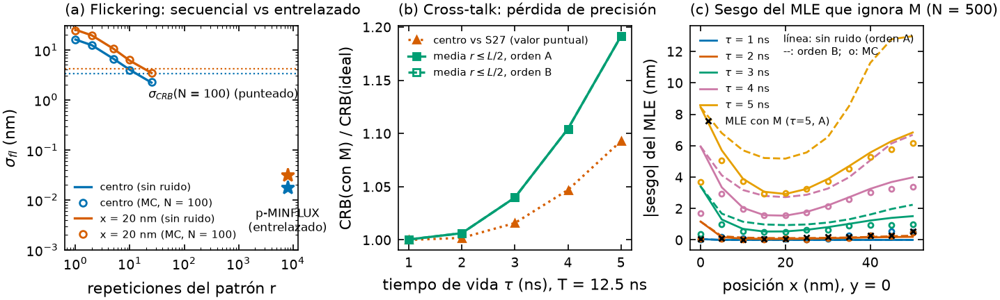

Localización de emisores individuales con haces dona: qué se hizo, qué se resolvió y cómo seguir hacia p-MINFLUX
Resumen. Construimos un estudio de simulación reproducible de la localización con haces
dona (MINFLUX) y lo usamos para responder qué limita la precisión y qué introduce sesgo. Del trabajo sale un
paquete Python propio, un script por figura, 254 tests, 276 números con procedencia y un manuscrito de 13 páginas;
cada resultado lo reprodujo un verificador independiente. Después lo contrastamos con el simulador SimuFLUX
(Marin & Ries, 2026) y lo llevamos al caso de interés: p-MINFLUX no iterativo, con láser de 20 MHz, 4
pulsos entrelazados de igual duración y L fijo. El resultado central es que un estimador de máxima
verosimilitud (MLE) con el modelo correcto alcanza el límite de Cramér–Rao (CRB). Casi todos los sesgos aparecen
cuando el modelo omite algo: el fondo, la desalineación del patrón o el cruce entre ventanas temporales. Un
proyecto complementario, pminflux-simulations, revisó el simulador p-MINFLUX anterior e implementó
ese modelo completo (§3).
1. Qué se hizo y cómo
Modelo. Un emisor en r se expone sucesivamente a K = 4 haces con un mínimo de intensidad. Usamos el patrón triangular (TCP): 3 donas en un círculo de diámetro L más una en el centro. Los fotones de cada exposición siguen una multinomial con pi ∝ Ii(r) + fondo (Balzarotti et al. 2017). La dona es Laguerre–Gauss (LG) con fwhm = 300 nm, contrastada con una dona vectorial de alta apertura (Richards–Wolf, NA = 1.4). La precisión se mide con el CRB, σ = √((Σxx+Σyy)/2), y con Monte Carlo de estimadores. Unidades: nm.
Método de trabajo. El trabajo se organizó en rondas acotadas de agentes (metodología agent-team).
Cada ronda tiene un planificador, workers que programan con tests y un verificador que reproduce cada número por
un camino propio sin ver el razonamiento del worker. Un resultado refutado no entra al texto: se corrige o se
declara abierto. "Terminado" lo define un test de aceptación escrito antes de empezar y protegido por hash. Hubo
5 rondas para el paquete y el manuscrito, y 1 ronda para este informe. Todo queda registrado en
equipo/.

scripts/fig_1_schematic.py [src:fig1]2. Problemas, cómo se encararon y qué se obtuvo
2.1 ¿Qué modelo de dona usar?
- Cómo
- Implementamos la dona vectorial (máscara de vórtice y polarización circular) y la comparamos con la LG, en la forma cerca del cero y en el CRB resultante.
- Resultado
- Una LG con la misma curvatura en el cero reproduce el CRB vectorial (diferencia < 0.4 %), así que el modelo LG alcanza. Si la polarización tiene la handedness opuesta, el cero se llena hasta el 85 % del pico y el CRB crece unas 90 veces. [src:vectorial]
- Queda
- Aberraciones reales (origen físico de un cero imperfecto). El diámetro de la dona frente a PyFocus con filling factor 1 no coincide (428 frente a 401 nm).
2.2 ¿Cuál es la precisión límite, y qué pasa en el centro del patrón?
- Cómo
- Calculamos la información de Fisher numéricamente en todo el campo y derivamos formas cerradas para el centro.
- Resultado
- Sin fondo, el CRB es discontinuo en el centro. El límite r→0 vale 1.61 y el valor puntual de Balzarotti (Eq. S27), 1.80 (L = 50, N = 100). La razón es 0.890, cercana a 2/√5, que es el valor exacto para un cero cuadrático. Con fondo la discontinuidad desaparece. El CRB escala como σ ∝ L1.00N−0.50 para L ≪ fwhm. Bastan 13 fotones para 5 nm, cuando una cámara ideal necesita 400. [src:crb_center] [src:scaling]
2.3 ¿Qué estimador alcanza ese límite?
- Cómo
- Monte Carlo del MLE frente a los estimadores lineales LMS y mLMS, dentro y fuera del TCP.
- Resultado
- Con fondo, el MLE es eficiente: eficiencia 0.991 con SBR = 10. LMS y mLMS se sesgan lejos del centro: −14.4 y −5.2 nm a 25 nm, contra 0.7 del MLE. Sin fondo el modelo no es regular en el centro, y el MLE queda por debajo del límite (0.84 del CRB) pero sesgado hacia el centro. [src:estimators]
- Queda
- Confirmar la convención SBR = 10 que se usa para medir la eficiencia.
2.4 El cero real no es perfecto: ¿conviene achicar L?
- Cómo
- Barrido del CRB en función de L para distintos ceros residuales ε = I(0)/Imax.
- Resultado
- No siempre: hay un L óptimo ≈ 0.78·fwhm·√ε para ε ≲ 0.01. Vale 10.5, 23 y 50 nm para ε = 0.002, 0.01 y 0.05. Es el criterio para elegir el L fijo. [src:zero_depth]
- Queda
- Optimizar L con ε y fondo juntos, usando valores medidos.
2.5 Las donas no están donde se cree
- Cómo
- Perturbamos al azar las posiciones de las donas (δ) y estimamos con el patrón nominal y con el verdadero.
- Resultado
- Con el patrón nominal, el sesgo en el centro es ≈ 0.78·δ: 7.7 nm con δ = 10. Con el patrón verdadero baja a 0.18 nm, así que la solución es calibrar. Para un sesgo menor que 1 nm hace falta δ ≲ 1.3 nm (1/0.78). [src:misalignment]
- Queda
- Simular cómo se mide el patrón y con qué error.
2.6 Fondo mal modelado nuevo
- Cómo
- SimuFLUX muestra que ignorar el fondo sesga fuertemente el estimador (su Fig. 2d). Hicimos el
análogo para TCP fijo con MLE: fondo igual en las 4 ventanas, N = 500, y cuatro variantes del estimador (sin
fondo, fondo exacto, fondo libre, fondo con error de ±30 %). Código en
background.py. - Resultado
- Si el MLE ignora el fondo, lee la señal extra de la exposición central como un emisor más alejado y sesga la posición hacia afuera: ≈ +5 nm en x y +3 nm en y con SBR = 5, y ≈ +2 nm con SBR = 20. Ajustar el fondo como tercer parámetro elimina el sesgo y cuesta poco: el CRB sube 0–4 % hasta 20 nm del centro y 20–26 % en r = L/2. Un error de ±30 % en el fondo deja ≤ 1.6 nm (Fig. 3). [src:background]
- Queda
- Fondo distinto en cada ventana y cómo medirlo en los datos.
2.7 Parpadeo del fluoróforo nuevo
- Cómo
- SimuFLUX muestra que en MINFLUX secuencial el parpadeo suma un error σfl que no depende
del número de fotones. Simulamos un parpadeo on/off de 100 µs durante 400 µs, con exposiciones en bloques
(secuencial) o alternadas cada 12.5 ns (p-MINFLUX). Código en
pminflux.py. - Resultado
- En el modo secuencial, σfl va de 16 nm (1 pasada del patrón) a 2.2 nm (25 pasadas), y se cumple STD² = σfl² + σ², como en SimuFLUX. Con el entrelazado, las 4 exposiciones ven el mismo tiempo "on" y σfl ≲ 0.03 nm. Es una ventaja concreta de p-MINFLUX (Fig. 2a). [src:pminflux_flicker]
- Queda
- Parpadeo rápido (de ns a µs) y fotoblanqueo: el entrelazado protege solo si el parpadeo es mucho más lento que 50 ns.
2.8 Cruce entre ventanas por el tiempo de vida nuevo
- Cómo
- Este efecto es propio de la excitación pulsada y SimuFLUX no lo trata. Un fotón excitado por un pulso llega con retardo exponencial de tiempo de vida τ y puede caer en la ventana siguiente. Derivamos la matriz de mezcla pobs = M p, con Mij = (1−q)q(si−sj) mod 4/(1−q⁴) y q = e−T/τ, y la validamos con Monte Carlo de fotones.
- Resultado
- Con τ = 5 ns, un 7.5 % de los fotones cae en la ventana siguiente. Si el estimador ignora M, el sesgo es de 3.4 nm (τ = 3 ns) y de 8–13 nm (τ = 5 ns, según el orden de los pulsos). Si incluye M, el sesgo desaparece y el CRB sube 4–19 % (τ = 3–5 ns) (Fig. 2b–c). M depende solo de τ y T, así que corregirlo no cuesta nada. [src:pminflux_crosstalk]
- Queda
- Todo lo anterior supone ventanas alineadas con el pulso y sin respuesta del instrumento (IRF). El simulador de §3 ya generaliza M a IRF y ventanas arbitrarias; falta contrastarla con el histograma TCSPC medido.

scripts/fig_9_pminflux_timing.py [src:fig9]
scripts/fig_10_background_bias.py [src:fig10]2.9 Problemas del propio proceso
- Cómo
- Cada número del manuscrito es una macro que resuelve contra
data/paper_numbers.json, y un script (check_provenance.py) rechaza cualquier número sin procedencia. Las figuras y los JSON se regeneran byte a byte. - Resultado
- Los verificadores refutaron afirmaciones en varias rondas, y se corrigieron antes de entrar al texto. En este informe, por ejemplo, el rango de σ/CRB con fondo exacto (0.97–1.06) y un artefacto de malla en el cruce entre ventanas para τ = 1 ns. Un test fallaba con numpy 2 y se arregló. MINFLUX iterativo se estudió (0.51 nm con 1000 fotones, frente a 3.16 nm de una cámara ideal), pero no aplica a p-MINFLUX con L fijo.
- Queda
- Los estudios nuevos (§2.6–2.8) todavía no están en el manuscrito ni en
reproduce.py. Los tests nuevos no se corrieron en el entorno de referencia (Windows, Python 3.8).
3. Proyecto complementario: pminflux-simulations
En paralelo, y con la misma metodología (3 rondas de agentes con verificador y revisor de código), se revisó
críticamente el simulador de p-MINFLUX que se usaba antes y se escribió una versión nueva, pminflux_sim v2
(github.com/FlorJDC/pminflux-simulations). Mientras este repositorio responde qué limita la precisión,
aquel responde si las simulaciones previas modelaban bien el instrumento pulsado.
- Qué se revisó
- El simulador anterior, en 16 hallazgos con un script que demuestra cada uno. Uno es conceptual: el modelo de probabilidades suponía fondo 1/K por ventana y ningún cruce entre pulsos, lo que no vale para ventanas más cortas que T/K ni con tiempo de vida finito. Nueve son de implementación: el TCSPC se quedaba con el fotón equivocado cuando llegaban varios en un ciclo, las ventanas no se plegaban módulo el período, el parpadeo se ignoraba en silencio, el emisor y el MLE quedaban atados a la grilla de la PSF, SBR infinito daba NaN, entre otros. Seis son de diseño; el más importante es que los estudios apagaban el tiempo de vida (τ ≈ 0), de modo que no podían ver el error del modelo.
- Mejoras
- Simulador fotón a fotón en tiempo absoluto, con tiempo de vida, IRF, ventanas arbitrarias, TCSPC de un fotón por ciclo, tiempo muerto del detector, fondo y parpadeo. Matriz de mezcla C (el M de §2.8, generalizada) con IRF y comienzos de ventana arbitrarios. MLE continuo, sin grilla, cuya verosimilitud coincide con ese modelo directo, con fondo libre opcional. CRB con cruce y parámetros de molestia. Todo con 75 tests y procedencia (semilla y hash del código en cada resultado).
- Resultados
- La matriz de mezcla reproduce las fracciones por ventana del simulador anterior (χ² = 5.7, p = 0.13), mientras que el modelo sin cruce queda descartado (χ² = 1927). En datos simulados con cruce realista, el estimador anterior tiene un sesgo de hasta 3.1 nm y RMSE/CRB = 1.67; el nuevo, 0.12 nm y 1.00. Con el patrón desalineado, el estimador ingenuo llega a 8.6 nm y el nuevo queda en 0.09 nm. Un resultado analítico verificado: si el tiempo muerto es un múltiplo entero del período (d = n·T), no sesga las fracciones por ventana a ninguna tasa. [src:pminflux_simulations]
- Queda
- Validar el modelo directo con datos reales (histograma TCSPC y cruce medido); medir el tiempo muerto y la IRF, que hoy son supuestos; rehacer los estudios con PSF medidas; incluir la distorsión de tasa finita, que hoy aporta ≤ 0.03 CRB; calibrar aparte las potencias de los haces, porque estimarlas junto con la posición introduce un sesgo que no baja con más datos.
4. Qué falta y cómo proseguir
Cada tarea reúne los "Queda" de las secciones 2 y 3, en orden de prioridad. Quedan fuera de alcance, por el experimento: MINFLUX iterativo, dwell central distinto y tracking.
| # | Tarea | Cómo | Terminado cuando |
|---|---|---|---|
| Prioridad 1 — validar el modelo p-MINFLUX con el instrumento real | |||
| 1 | Modelo directo contra datos (§2.8, §3) | Contar los microtiempos medidos con pminflux_sim.count_windows y comparar las fracciones por ventana y el cruce con la matriz C. | χ² compatible, o desvíos explicados. |
| 2 | Medir tiempo muerto e IRF (§3) | Histograma de la IRF y del intervalo entre detecciones del detector. | Valores medidos reemplazan los supuestos; con d = n·T el sesgo se anula. |
| 3 | Calibración del patrón y L (§2.4–2.5) | Medir centros, potencias y ε con N alto, y pasarlos como conocidos; optimizar L con ε y fondo (experiments.optimal_L). | Tabla Lopt(ε, SBR); tolerancia δ ≲ 1.3 nm. |
| 4 | PSF medidas y fondo (§2.6, §3) | Rehacer los estudios con las PSF medidas; fondo distinto por ventana. | Sesgo < 1 nm y RMSE/CRB ≈ 1 con PSF reales. |
| Prioridad 2 — efectos que pueden cambiar los números | |||
| 5 | Parpadeo rápido y blanqueo (§2.7) | Estados oscuros de ns a µs y fotoblanqueo durante la medición. | σfl en función del tiempo de parpadeo. |
| 6 | Aberraciones (§2.1) | Fases de Zernike y máscara de vórtice desalineada en vectorial.py. | ε y sesgo en función de la amplitud de la aberración. |
| 7 | Deriva, vibración, dipolo, 3D | Emisor en movimiento, excitación según la orientación, emisor fuera del foco. | Error extra frente a la amplitud o el ángulo. |
| Prioridad 3 — consolidar el repositorio | |||
| 8 | Integrar §2.6–2.8 y unificar | Usar pminflux_sim como modelo p-MINFLUX de referencia y contrastar su CRB con donutloc. Llevar las figuras 9–10 a make_all_figures.py, compute_paper_numbers.py, reproduce.py y paper/main.tex. | check_provenance.py y el test de aceptación pasan. |
| 9 | Validación cruzada (§2.1, §2.6) | Comparar con SimuFLUX (Python, código abierto) en un TCP estático con fondo, y con PyFocus para el diámetro de la dona. | Acuerdo, o diferencias explicadas. |
| 10 | Pendientes (§2.3, §2.9) | Confirmar SBR = 10 y la normalización del RMSE frente a Masullo et al. 2022; correr los tests en Python 3.8. | Puntos cerrados en open_points.tex. |
Siguiente paso sugerido. Las tareas 1 y 2: el estimador ya existe (§3), y lo que falta es comprobar con datos que su modelo describe el instrumento. Todo lo demás se apoya en esa validación.
5. Reproducir y referencias
python -m unittest discover -s tests (≈ 30 s). Las figuras nuevas se regeneran con
python scripts/fig_9_pminflux_timing.py y python scripts/fig_10_background_bias.py (≈ 1 min
cada una, semilla 42), y el manuscrito con python scripts/reproduce.py (≈ 25 min). Este PDF se genera
con node informe/build_pdf.js. Las etiquetas [src:…] resuelven en
equipo/2026-09-28_sintesis-pdf/out/provenance.json.
- F. Balzarotti et al., Science 355, 606 (2017) — MINFLUX.
- L. A. Masullo et al., Nano Lett. 21, 840 (2021) — Pulsed Interleaved MINFLUX; y Biophys. Rep. 2, 100036 (2022).
- Repositorio complementario:
github.com/FlorJDC/pminflux-simulations(reporte enreport/index.html). - Z. Marin, J. Ries, Nat. Commun. 17, 246 (2026) — SimuFLUX; nota en
docs/literature/D_simuflux.md.